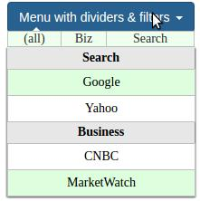

What it looks like:

Installation
npm install menuoptions
-- or --
git clone https://github.com/compsult/MenuOptions.git
Features:
- Input masking
user defined masks (via user supplied RegExp) and pre-defined masks
error messages that explain why the input key is invalid
hotkeys a single key can fill a field (e.g.,
tfills in todays date in date fields)- Multi column autocomplete
intelligent autocomplete (characters not in any select list item are automatically removed, saving keystrokes)
mouseover filtering lets user reduce choices by moving their mouse over a filter element
- Rocker control
Binary options (true/false, yes/no, etc) that never hide a choice
- Menus
Built from JSON
mouseover filtering
Other benefits:
offers the ability to combine multi column autocomplete and input mask functionality
uses color highlighting to show autocomplete matches
it can utilize data from a variety of JSON types (array, array of arrays, single object, array of objects)
the value associated with the label string is saved in the input element automatically (in the menu_opt_key - no need to manually update a hidden field)
Notes:
1 - MenuOptions documentation has been moved to ReadTheDocs
2 - It is strongly advised to use the latest release of MenuOptions, for latest features and bug fixes
Getting started with input masks
$('input#MdYtest').menuoptions({
"ClearBtn": true,
"Mask": "Mon DD, YYYY"
});
Getting started with a simple select list
var Data = [ "January","February","March","April","May","June","July",
"August","September","October","November","December" ];
$('input#selecttest').menuoptions({
"Data": Data
});
Getting started with a simple menu
var Data = [ {"javascript": function() { alert('Run some javascript'); }},
{"Google": "http://www.google.com"},
{"Yahoo": "http://www.yahoo.com"}];
$('button[id$="menutest"]').menuoptions({
"Data": Data,
"MenuOptionsType": "Navigate", // Navigate is for menus
});
Autocomplete with images

Mouseover filtering with dividers
Dynamic reloading of a MenuOptions select list
In this case, the user selects a start time and the end time will be modified to only display
the start time plus 1 hour and 30 minutes later
Using MenuOptions with jQuery's serialize
If you load MenuOptions select list using an object, the value will be written into the 'menu_opt_key'
attribute. jQuery's serialize will not pick up the value of a MenuOptions select list (menu_opt_key).
To account for this, wrap serialize() with re_serialize, like this:
$('input[name=maritalstatus]').menuoptions('re_serialize', $('form#form1').serialize());
Multiple select lists on a page demo
This demo illustrates using the using multiple MenuOptions controls, including the rocker control